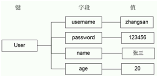

redis命令篇
本文于342天之前发表，文中内容可能已经过时。
redis-cli的使用之发送命令
默认连接：IP 127.0.0.1 端口 6379
redis-cli
指定IP端口：
redis-cli –h 127.0.0.1 –p 6379
Redis提供了PING-PONG机制，测试与客户端和服务器链接是否正常
redis-cli ping
或
redis-cli
redis 127.0.0.1:6379>ping
PONG
redis-cli的使用之命令返回值
状态回复（最简单的回复-redis提供的测试命令）
redis>PING
PONG
127.0.0.1:6379>SET test 123
OK
错误回复（以error开头，后面跟着错误信息）
127.0.0.1:6379>TEST
(error) ERR unknown command 'TEST'
整数回复
127.0.0.1:6379>INCR test_incr
(integer) 1
字符串回复（最长久的一种回复，双引号包裹）
127.0.0.1:6379>get test
“123”
多行字符串回复
127.0.0.1:6379>KEYS *
1) "test_incr"
2) "test"
退出
127.0.0.1:6379> exit
关闭
127.0.0.1:6379>shutdown
基本命令KEYS GET SET
字符串类型是redis中最基本的数据类型，它能存储任何形式的字符串，包括二进制数据。可以存储JSON化的对象、字节数组等。一个字符串类型键允许存储的数据最大容量是512MB。
赋值与取值：
SET key value
GET key
127.0.0.1:6379> keys *
(empty list or set)
127.0.0.1:6379> set test 123
OK
127.0.0.1:6379> set test1 ab
OK
127.0.0.1:6379> keys *
1) "test1"
2) "test"
127.0.0.1:6379> get test
"123"
127.0.0.1:6379> get test1
"abc"
127.0.0.1:6379> get test2
(nil)
127.0.0.1:6379>
redis数据库切换SELECT
redis默认支持16个数据库，对外都是以一个从0开始的递增数字命名，可以通过参数database来修改默认数据库个数。客户端连接redis服务后会自动选择0号数据库，可以通过select命令更换数据库，例如选择1号数据库：
127.0.0.1:6379>SELECT 1
OK
127.0.0.1:6379>GET test
(nil)
说明：
Redis不支持自定义数据库名称。
Redis不支持为每个数据库设置访问密码。
Redis的多个数据库之间不是安全隔离的，FLUSHALL命令会清空所有数据库的数据。
redis的基本命令之KEYS
获取符合规则的建名列表。
KEYS *
keys test[_]*
keys t[a-d]
说明：
？ 匹配一个字符
* 匹配任意个（包括0个）字符
[] 匹配括号间的任一字符，可以使用“-“表示范围。如a[a-d]匹配ab/ac/ad
\x 匹配字符x，用于转义符合，如果要匹配“？“就需要使用\?
redis的基本命令之EXISTS
判断一个键是否存在。
如果键存在则返回整数类型1，否则返回0。
127.0.0.1:6379> keys *
1) "test_incr"
2) "test"
127.0.0.1:6379> exists test
(integer) 1
127.0.0.1:6379> exists test1
(integer) 0
127.0.0.1:6379>
redis的基本命令之DEL
删除键，可以删除一个或者多个键，多个键用空格隔开，返回值是删除的键的个数。
127.0.0.1:6379> del test
(integer) 1
127.0.0.1:6379> del test
(integer) 0
127.0.0.1:6379> del test test_incr
(integer) 1
127.0.0.1:6379>
redis的基本命令之TYPE
获得键值的数据类型，返回值可能是string（字符串）、hash（散列类型）、list（列表类型）、set（集合类型）、zset（有序集合类型）。
127.0.0.1:6379> keys *
1) "test1"
2) "test"
127.0.0.1:6379> type test
string
127.0.0.1:6379> type test1
string
redis的基本命令之HELP
127.0.0.1:6379> help
redis-cli 2.8.19
Type: "help @<group>" to get a list of commands in <group>
"help <command>" for help on <command>
"help <tab>" to get a list of possible help topics
"quit" to exit
127.0.0.1:6379> help type
TYPE key
summary: Determine the type stored at key
since: 1.0.0
group: generic
redis的基本命令之FLUSHALL
清空所有数据库。
127.0.0.1:6379> FLUSHALL
OK
redis的基本命令之FLUSHDB
清空当前数据库。
127.0.0.1:6379> FLUSHDB
OK
Redis数据类型之字符串
存放的字符串为二进制是安全的。字符串长度支持到512M。
自增INCR/INCRBY
递增数字INCR key
当存储的字符串是整数时，redis提供了一个实用的命令INCR，其作用是让当前键值递增，并返回递增后的值。
127.0.0.1:6379> keys *
1) "test1"
2) "test"
127.0.0.1:6379> get test
"123"
127.0.0.1:6379> get test1
"abc"
127.0.0.1:6379> get test2
(nil)
127.0.0.1:6379> incr num
(integer) 1
127.0.0.1:6379> keys *
1) "num"
2) "test1"
3) "test"
127.0.0.1:6379> incr num
(integer) 2
127.0.0.1:6379> incr num
(integer) 3
127.0.0.1:6379>
从上面例子可以看出，如果num不存在，则自动会创建，如果存在自动+1。
指定增长系数
语法：INCRBY key increment
127.0.0.1:6379> incr num
(integer) 2
127.0.0.1:6379> incr num
(integer) 3
127.0.0.1:6379> incrby num 2
(integer) 5
127.0.0.1:6379> incrby num 2
(integer) 7
127.0.0.1:6379> incrby num 2
(integer) 9
127.0.0.1:6379> incr num
(integer) 10
127.0.0.1:6379>
自减DECR/DECRBY
减少指定的整数
DECR key
DECRBY key decrement
127.0.0.1:6379> incr num
(integer) 10
127.0.0.1:6379> decr num
(integer) 9
127.0.0.1:6379> decrby num 3
自加浮点INCRBYFLOAT
整数时，第一次加可以得到正确结果，浮点数后再加浮点就会出现精度问题。
原来下面的例子2.8.7注意在新版本中已经修正了这个浮点精度问题。3.0.7
INCRBYFLOAT key decrement
127.0.0.1:6379>set num
(integer) 131
127.0.0.1:6379>incrfloat num 0.7
“131.7”
127.0.0.1:6379>incrfloat num 0.7
“132.3999999999999999”
尾部追加APPEND
向尾部追加值。如果键不存在则创建该键，其值为写的value，即相当于SET key value。返回值是追加后字符串的总长度。
语法：APPEND key value
127.0.0.1:6379> keys *
1) "num"
2) "test1"
3) "test"
127.0.0.1:6379> get test
"123"
127.0.0.1:6379> append test "abc"
(integer) 6
127.0.0.1:6379> get test
"123abc"
127.0.0.1:6379>
获取字符串长度STRLEN
字符串长度，返回数据的长度，如果键不存在则返回0。注意，如果键值为空串，返回也是0。
语法：STRLEN key
127.0.0.1:6379> get test
"123abc"
127.0.0.1:6379> strlen test
(integer) 6
127.0.0.1:6379> strlen tnt
(integer) 0
127.0.0.1:6379> set tnt ""
OK
127.0.0.1:6379> strlen tnt
(integer) 0
127.0.0.1:6379> exists tnt
(integer) 1
127.0.0.1:6379>
多个MSET MGET
同时设置/获取多个键值
语法：MSET key value [key value …]
MGET key [key …]
127.0.0.1:6379> flushall
OK
127.0.0.1:6379> keys *
(empty list or set)
127.0.0.1:6379> mset a 1 b 2 c 3
OK
127.0.0.1:6379> mget a b c
1) "1"
2) "2"
3) "3"
127.0.0.1:6379>
Redis生存时间
Redis之生存时间EXPIRE
Redis在实际使用过程中更多的用作缓存，然而缓存的数据一般都是需要设置生存时间的，即到期后数据销毁。
语法：EXPIRE key seconds
127.0.0.1:6379> flushall
OK
127.0.0.1:6379> set bomb tnt
OK
127.0.0.1:6379> expire bomb 10
(integer) 1
127.0.0.1:6379> ttl bomb
(integer) 5
127.0.0.1:6379> ttl bomb
(integer) 3
127.0.0.1:6379> ttl bomb
(integer) 3
127.0.0.1:6379> ttl bomb
(integer) 2
127.0.0.1:6379> ttl bomb
(integer) 1
127.0.0.1:6379> ttl bomb
(integer) -2
127.0.0.1:6379> ttl bomb
(integer) -2
127.0.0.1:6379>
TTL查看key的剩余时间，当返回值为-2时，表示键被删除。
当 key 不存在时，返回 -2 。当 key 存在但没有设置剩余生存时间时，返回 -1 。否则，以毫秒为单位，返回 key 的剩余生存时间。
注意：在 Redis 2.8 以前，当 key 不存在，或者 key 没有设置剩余生存时间时，命令都返回 -1 。
清除生存时间PERSIST
语法：PERSIST key
127.0.0.1:6379> set bomb tnt
OK
127.0.0.1:6379> expire bomb 60
(integer) 1
127.0.0.1:6379> ttl bomb
(integer) 49
127.0.0.1:6379> persist bomb
(integer) 1
127.0.0.1:6379> ttl bomb
(integer) -1
127.0.0.1:6379>
设置新的数据时需要重新设置该key的生存时间。重新设置值也会清除生存时间。
设置生存时间单位为毫秒PEXPIRE
语法：PEXPIRE key milliseconds
127.0.0.1:6379> set bomb tnt
OK
127.0.0.1:6379> pexpire bomb 10000
(integer) 1
127.0.0.1:6379> ttl bomb
(integer) 6
127.0.0.1:6379> ttl bomb
(integer) 3
127.0.0.1:6379> ttl bomb
(integer) -2
127.0.0.1:6379>
设置生存时间为毫秒，可以做到更精确的控制。
Redis高级中的hash结构
在redis中用的最多的就是hash和string类型。
问题
假设有User对象以JSON序列化的形式存储到redis中，User对象有id、username、password、age、name等属性，存储的过程如下：
保存、更新：
User对象->json(string)->redis
如果在业务上只是更新age属性，其他的属性并不做更新应该怎么做呢？
Redis数据类型之散列类型hash
散列类型存储了字段（field）和字段值的映射，但字段值只能是字符串，不支持其他类型，也就是说，散列类型不能嵌套其他的数据类型。一个散列类型可以包含最多2的32次方-1个字段。

HSET和HGET赋值和取值
HSET key field value
HGET key field
HMSET key field value [field value…]
HMGET key field value [field value…]
HGETALL key
127.0.0.1:6379> hset user username chenchen
(integer) 1
127.0.0.1:6379> hget user username
"chenchen"
127.0.0.1:6379> hset user username chen
(integer) 0
127.0.0.1:6379> keys user
1) "user"
127.0.0.1:6379> hgetall user
1) "username"
2) "chen"
127.0.0.1:6379>
127.0.0.1:6379> hset user age 30
(integer) 1
127.0.0.1:6379> hgetall user
1) "username"
2) "chen"
3) "age"
4) "30"
127.0.0.1:6379>
HSET命令不区分插入和更新操作，当执行插入操作时HSET命令返回1，当执行更新操作时返回0。
HMSET和HMGET设置和获取对象属性
127.0.0.1:6379> hmset person username tony age 18
OK
127.0.0.1:6379> hmget person age username
1) "18"
2) "tony"
127.0.0.1:6379> hgetall person
1) "username"
2) "tony"
3) "age"
4) "18"
127.0.0.1:6379>
注意：上面HMGET字段顺序可以自行定义
HEXISTS属性是否存在
127.0.0.1:6379> hexists killer
(error) ERR wrong number of arguments for 'hexists' command
127.0.0.1:6379> hexists killer a
(integer) 0
127.0.0.1:6379> hexists user username
(integer) 1
127.0.0.1:6379> hexists person age
(integer) 1
127.0.0.1:6379>
HDEL删除对象字段
127.0.0.1:6379> hdel user age
(integer) 1
127.0.0.1:6379> hgetall user
1) "username"
2) "chen"
127.0.0.1:6379> hgetall person
1) "username"
2) "tony"
3) "age"
4) "18"
127.0.0.1:6379>
只获取字段名HKEYS或字段值HVALS
127.0.0.1:6379> hkeys person
1) "username"
2) "age"
127.0.0.1:6379> hvals person
1) "tony"
2) "18"
7.6.7 获取字段数量HLEN
127.0.0.1:6379> hlen user
(integer) 1
127.0.0.1:6379> hlen person
(integer) 2
127.0.0.1:6379>
Jredis示例
package cn.redis;
import java.util.Map;
import redis.clients.jedis.Jedis;
import redis.clients.jedis.JedisPool;
import redis.clients.jedis.JedisPoolConfig;
public class JedisPoolDemoCMD {
public static void main(String[] args) {
// 构建连接池配置信息
JedisPoolConfig jedisPoolConfig = new JedisPoolConfig();
// 设置最大连接数
jedisPoolConfig.setMaxTotal(50);
// 构建连接池
JedisPool jedisPool = new JedisPool(jedisPoolConfig, "127.0.0.1", 6379);
// 从连接池中获取连接
Jedis jedis = jedisPool.getResource();
jedis.hset("USER_1", "username", "zhangsan");
jedis.hset("USER_1", "password", "123456");
Map<String, String> val = jedis.hgetAll("USER_1");
for (Map.Entry<String, String> entry : val.entrySet()) {
System.out.println(entry.getKey() + " " + entry.getValue());
}
// 将连接还回到连接池中
jedisPool.returnResource(jedis);
// 释放连接池
jedisPool.close();
}
}
Redis中测试：
127.0.0.1:6379> hgetall USER_1
1) "username"
2) "zhangsan"
3) "password"
4) "123456"
127.0.0.1:6379> hgetall user_1
(empty list or set)
127.0.0.1:6379>
注意：key值的大小写是区分的。
Redis高级中的list结构
在redis中用的最多的就是hash和string类型。
问题
Redis的list类型其实就是一个每个子元素都是string类型的双向链表。链表的最大长度是(2的32次方)。我们可以通过push,pop操作从链表的头部或者尾部添加删除元素。这使得list既可以用作栈，也可以用作队列。
有意思的是list的pop操作还有阻塞版本的，当我们[lr]pop一个list对象时，如果list是空，或者不存在，会立即返回nil。但是阻塞版本的b[lr]pop可以则可以阻塞，当然可以加超时时间，超时后也会返回nil。为什么要阻塞版本的pop呢，主要是为了避免轮询。举个简单的例子如果我们用list来实现一个工作队列。执行任务的thread可以调用阻塞版本的pop去获取任务这样就可以避免轮询去检查是否有任务存在。当任务来时候工作线程可以立即返回，也可以避免轮询带来的延迟。
查看list
redis 127.0.0.1:6379> lrange mylist3 0 -1
LPUSH
在key对应list的头部添加字符串元素
redis 127.0.0.1:6379> lpush mylist "world"
(integer) 1
redis 127.0.0.1:6379> lpush mylist "hello"
(integer) 2
redis 127.0.0.1:6379> lrange mylist 0 -1
1) "hello"
2) "world"
redis 127.0.0.1:6379>
RPUSH
在key对应list的尾部添加字符串元素
redis 127.0.0.1:6379> rpush mylist2 "hello"
(integer) 1
redis 127.0.0.1:6379> rpush mylist2 "world"
(integer) 2
redis 127.0.0.1:6379> lrange mylist2 0 -1
1) "hello"
2) "world"
redis 127.0.0.1:6379>
linsert
在key对应list的特定位置之前或之后添加字符串元素
redis 127.0.0.1:6379> rpush mylist3 "hello"
(integer) 1
redis 127.0.0.1:6379> rpush mylist3 "world"
(integer) 2
redis 127.0.0.1:6379> linsert mylist3 before "world" "there"
(integer) 3
redis 127.0.0.1:6379> lrange mylist3 0 -1
1) "hello"
2) "there"
3) "world"
redis 127.0.0.1:6379>
lset
设置list中指定下标的元素值
redis 127.0.0.1:6379> rpush mylist4 "one"
(integer) 1
redis 127.0.0.1:6379> rpush mylist4 "two"
(integer) 2
redis 127.0.0.1:6379> rpush mylist4 "three"
(integer) 3
redis 127.0.0.1:6379> lset mylist4 0 "four"
OK
redis 127.0.0.1:6379> lset mylist4 -2 "five"
OK
redis 127.0.0.1:6379> lrange mylist4 0 -1
1) "four"
2) "five"
3) "three"
redis 127.0.0.1:6379>
lrem
从key对应list中删除count个和value相同的元素，count>0时，按从头到尾的顺序删除
redis 127.0.0.1:6379> rpush mylist5 "hello"
(integer) 1
redis 127.0.0.1:6379> rpush mylist5 "hello"
(integer) 2
redis 127.0.0.1:6379> rpush mylist5 "foo"
(integer) 3
redis 127.0.0.1:6379> rpush mylist5 "hello"
(integer) 4
redis 127.0.0.1:6379> lrem mylist5 2 "hello"
(integer) 2
redis 127.0.0.1:6379> lrange mylist5 0 -1
1) "foo"
2) "hello"
redis 127.0.0.1:6379>
count<0时，按从尾到头的顺序删除
redis 127.0.0.1:6379> rpush mylist6 "hello"
(integer) 1
redis 127.0.0.1:6379> rpush mylist6 "hello"
(integer) 2
redis 127.0.0.1:6379> rpush mylist6 "foo"
(integer) 3
redis 127.0.0.1:6379> rpush mylist6 "hello"
(integer) 4
redis 127.0.0.1:6379> lrem mylist6 -2 "hello"
(integer) 2
redis 127.0.0.1:6379> lrange mylist6 0 -1
1) "hello"
2) "foo"
redis 127.0.0.1:6379>
count=0时，删除全部
redis 127.0.0.1:6379> rpush mylist7 "hello"
(integer) 1
redis 127.0.0.1:6379> rpush mylist7 "hello"
(integer) 2
redis 127.0.0.1:6379> rpush mylist7 "foo"
(integer) 3
redis 127.0.0.1:6379> rpush mylist7 "hello"
(integer) 4
redis 127.0.0.1:6379> lrem mylist7 0 "hello"
(integer) 3
redis 127.0.0.1:6379> lrange mylist7 0 -1
1) "foo"
redis 127.0.0.1:6379>
ltrim
保留指定key 的值范围内的数据
redis 127.0.0.1:6379> rpush mylist8 "one"
(integer) 1
redis 127.0.0.1:6379> rpush mylist8 "two"
(integer) 2
redis 127.0.0.1:6379> rpush mylist8 "three"
(integer) 3
redis 127.0.0.1:6379> rpush mylist8 "four"
(integer) 4
redis 127.0.0.1:6379> ltrim mylist8 1 -1
OK
redis 127.0.0.1:6379> lrange mylist8 0 -1
1) "two"
2) "three"
3) "four"
redis 127.0.0.1:6379>
lpop
从list的头部删除元素，并返回删除元素
redis 127.0.0.1:6379> lrange mylist 0 -1
1) "hello"
2) "world"
redis 127.0.0.1:6379> lpop mylist
"hello"
redis 127.0.0.1:6379> lrange mylist 0 -1
1) "world"
redis 127.0.0.1:6379>
7.7.10 rpop
从list的尾部删除元素，并返回删除元素：
redis 127.0.0.1:6379> lrange mylist2 0 -1
1) "hello"
2) "world"
redis 127.0.0.1:6379> rpop mylist2
"world"
redis 127.0.0.1:6379> lrange mylist2 0 -1
1) "hello"
redis 127.0.0.1:6379>
rpoplpush
从第一个list的尾部移除元素并添加到第二个list的头部,最后返回被移除的元素值，整个操作是原子的.如果第一个list是空或者不存在返回nil：
redis 127.0.0.1:6379> lrange mylist5 0 -1
1) "three"
2) "foo"
3) "hello"
redis 127.0.0.1:6379> lrange mylist6 0 -1
1) "hello"
2) "foo"
redis 127.0.0.1:6379> rpoplpush mylist5 mylist6
"hello"
redis 127.0.0.1:6379> lrange mylist5 0 -1
1) "three"
2) "foo"
redis 127.0.0.1:6379> lrange mylist6 0 -1
1) "hello"
2) "hello"
3) "foo"
redis 127.0.0.1:6379>
lindex
返回名称为key的list中index位置的元素：
redis 127.0.0.1:6379> lrange mylist5 0 -1
1) "three"
2) "foo"
redis 127.0.0.1:6379> lindex mylist5 0
"three"
redis 127.0.0.1:6379> lindex mylist5 1
"foo"
redis 127.0.0.1:6379>
llen
返回key对应list的长度：
redis 127.0.0.1:6379> llen mylist5
(integer) 2
redis 127.0.0.1:6379>
赏
 支付宝打赏
支付宝打赏
 微信打赏
微信打赏
支付宝打赏
微信打赏
如果文章对你有帮助，欢迎点击上方按钮打赏作者